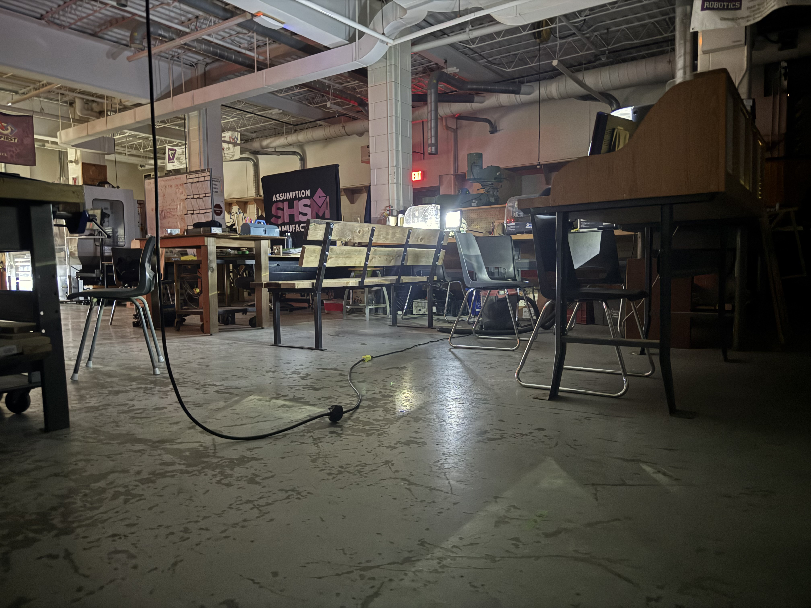
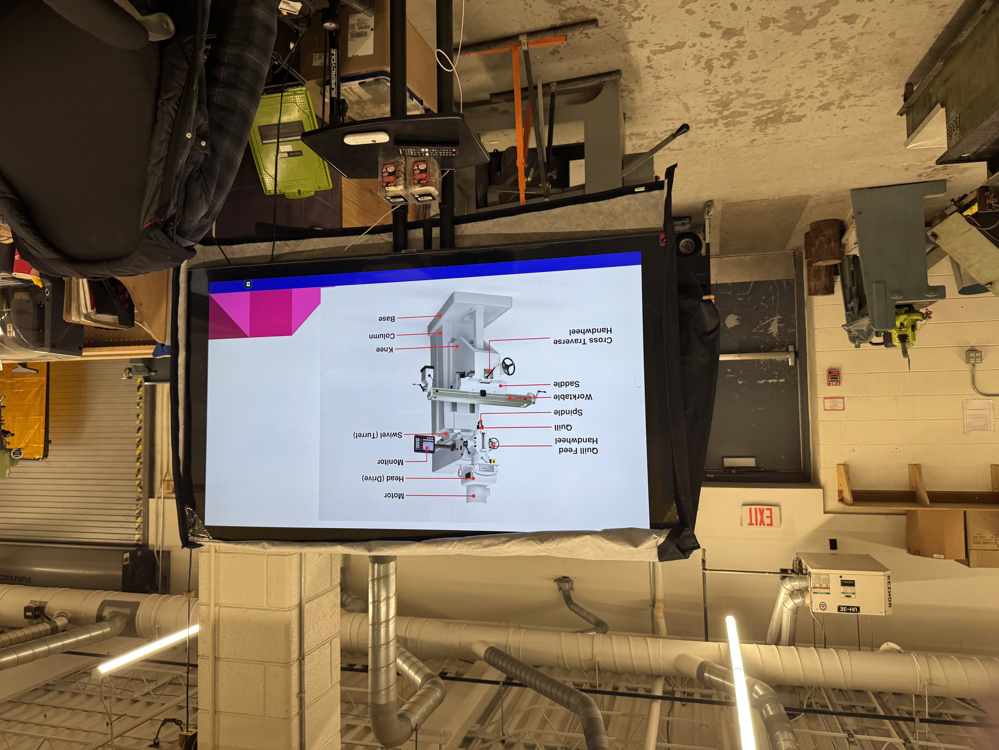

Job Description
A CNC Programmer creates and edits computer programs that control CNC machines used to manufacture metal and plastic parts.
Be able to set up machines, select tools, measure finished products, and ensure parts meet quality standards.

Future Pathway
A CNC Programmer creates and edits computer programs that control CNC machines used to manufacture metal and plastic parts.
Be able to set up machines, select tools, measure finished products, and ensure parts meet quality standards.
To become a CNC Programmer, students should earn an OSSD. Strong math skills and Manufacturing Technology courses are helpful.
After high school, students can continue their training through a college program or an apprenticeship in CNC programming or machining.

A workplace pathway for a CNC Programmer often begins with an entry-level position in a manufacturing company, such as a machine operator or CNC trainee.
As they develop their skills and knowledge, they can advance into CNC programming and more specialized manufacturing roles.
Complete an apprenticeship or attend a college program in CNC Programming or Precision Machining. Combining education with workplace experience helps improve career opportunities.
